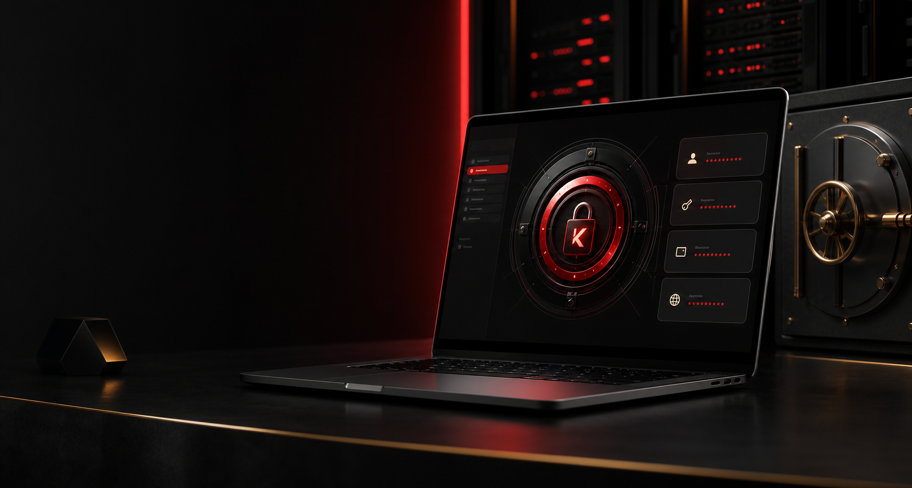

Hashed accounts
Your account password is hashed before storage and never saved in plain text.

Self-hosted password manager
Keep login credentials inside your own infrastructure, with encrypted website passwords, account login protection, and a master-password gate before secrets are revealed.
Security model
Your account password is hashed before storage and never saved in plain text.
Website passwords are encrypted in the database with a server-side Fernet key.
Saved passwords stay hidden until your session has been unlocked with a separate master password.
Deployment ready
Run the FastAPI backend on your local-network Ubuntu server, serve the static frontend, and expose the app through Cloudflare Tunnel when you are ready for public access.